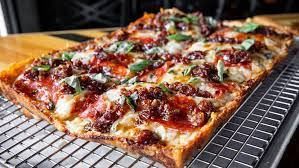

Detroit-style deep dish Pizza
Welcome to the pizza recipe page!

Detroit-style Pizza
Detroit-style Pizza or also known more as the deep dish pizza is a unique style of Pizza,
as it breaks away from the traditional circle thin pizza style we all know and love.
This style of Pizza is usually shaped like a square and is cut so. Known for its thick crust and looks, along with a light-charred texture
in its crust. Using the properly shaped pan will have your crust looking delightful and crunchy.
Ingredients
For the dough:
- 1 cup of warm water
- 1 (.25 ounce) package active dry yeast
- 1 teaspoon white sugar
- 3 teaspoons olive oil, divided
- 1 teaspoon kosher salt
- 2 1/2 cups bread flour
For the sauce:
- 1 (24 ounce) jar marinara sauce
Dried oregano
- 1 teaspoon red pepper flakes
- 1 teaspoon garlic powder
Toppings:
- 1 (8 ounce) package shredded Monterey Jack cheese
- 1/2 (8 ounce) packaghe mild Cheddar cheese
- 1 (8 ounce) package thick pepperoni slices
Directions to make
- Pour warm water into the bowl of stand mixer; mix in yeast and sugar and let dissolve. Add 2 teaspoons
olive oil, salt, and bread flour. Knead mixture together with a dough hook attachment until dough is very smooth, soft, and elastic.
- Drizzle remaining olive oil over the bottom of a 10x14-inch Detroit-style pizza pan and spread around with your fingers. Place dough in the center; pull
and stretch into a roughly rectangular shape with oiled fingers. Cover and let rise until doubled in volume, about 1 hour. Prepare sauce and cheese in the meantime.
- Combine marinara sauce, oregano, red pepper flakes, and garlic powder in a saucepan over medium-low heat. Simmer to fully hydrate the oregano and garlic, about 15 minutes.
- Preheat the oven to 500 to 550 degrees F (260 to 288 degress C)
- Dice Monterey Jack and Cheddar cheese into small cubes. Toss lightly to mix together.
- Rub fingertips with some olive oil from the pan. Press out air from the dough while stretching and pushing into a rectangle that goes all the way to the edges of the pan.
Stretch up the sides about 1/2 inch or so.
- Lay most of the pepperoni onto the dough. Scatter cheese cubes evenly on top, making sure to fully cover all the edges
where dough meets the pan. Ladle sauce on top in 3 long strips. Arrange remaining pepperoni over the sauce.
- Bake in the preheated oven until pizza is somewhere between golden brown and golden black, about 15 minutes. Let cool for 5 minutes
- Very carefully slide pizza onto a cutting board using a spatula. Cut into individual pieces using the lines of sauce as a guide.
Back to top!
Return to main recipe page!